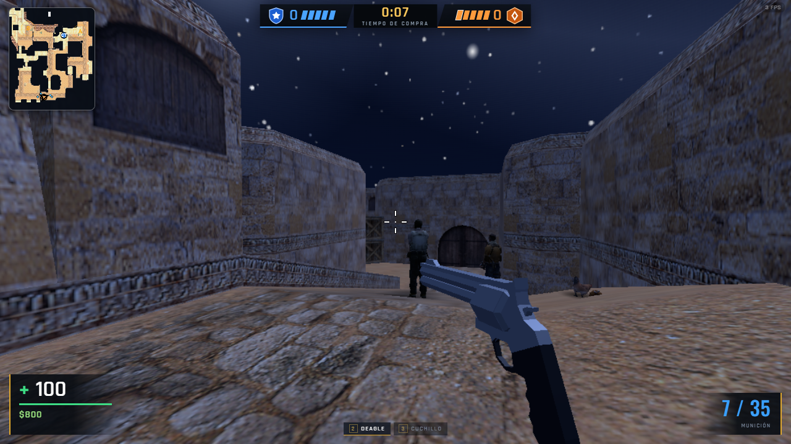

TEAM T STUDIO

Presentamos
FAFI 1.6
Un shooter táctico en primera persona que corre directo en tu navegador.
SIN DESCARGASSIN INSTALARGRATIS
EEST N°1 “EDUARDO ADER” · VICENTE LÓPEZLABORATORIO DE PROGRAMACIÓN 5°3
Un shooter táctico en primera persona que corre directo en tu navegador.
Un juego de disparos por equipos inspirado en Counter-Strike. Se juega en una página web: abrís el link y jugás.

Muchos juegos piden una PC potente. Mucha gente no puede pagarla y queda afuera.
Instalar un juego lleva horas, mucho espacio y a veces cuentas y launchers.
Controles y reglas difíciles alejan a quien nunca jugó este tipo de juegos.
Corre en el navegador, alcanza con una computadora de pocos recursos, no necesita instalación y tiene mecánicas fáciles de entender.

Un campo de tiro con blancos móviles, sin límite de tiempo. Todas las armas están disponibles desde la tienda y cada disparo deja su marca en las paredes.


Una película dentro del juego sobre la Segunda Guerra Mundial. El primer capítulo cuenta el desembarco de Normandía, el 6 de junio de 1944, en ocho escenas narradas con voz.

Creá una sala, mirá quién está conectado y votá el mapa entre todos.
Buscá jugadores, mandá solicitudes y recibí el aviso en tu pantalla en tiempo real.
Desafiá a un amigo que esté en línea y aceptá desde una notificación.
Hablá con tu sala: voz automática o pulsar para hablar, con todos los ajustes del micrófono.
La página, los menús y el diseño.
Reglas, movimiento, bots y disparos, 60 veces por segundo.
Dibuja mapas, personajes y armas con la placa de video.
Disparos, pasos y explosiones con dirección y distancia.
Sin descargas. Sin instalar nada. Abrí la web y jugá.
github.com/SantinoLaudati/Fafi-1.6
Instagram @teamtstudio
¡GRACIAS!